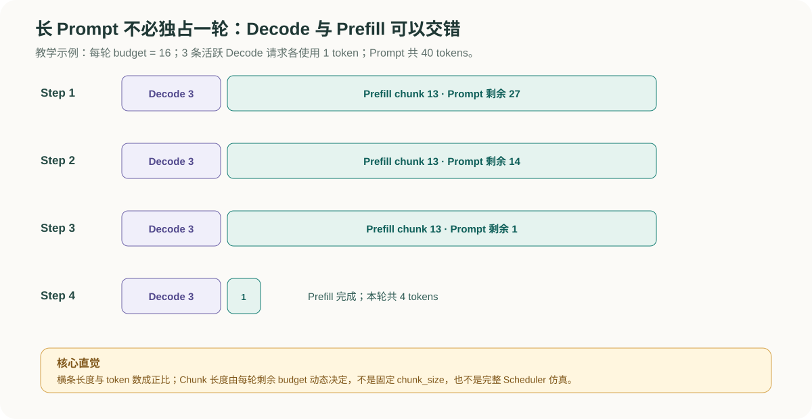

第 11 章 · 调度、批处理与运行时
Chunked Prefill：让长 Prompt 与 Decode 协同执行
Prefill 一次处理很多 Prompt tokens，Decode 则持续为活跃请求生成新 token。Chunked Prefill 把长 Prefill 拆成多个较小的调度片段，让它可以与 Decode 工作共享每轮 token budget。
想象 GPU 正在为 20 个用户逐 token 生成答案。这时，一个新用户提交了 30,000-token 的长文档。如果系统必须先把这份长 Prompt 一口气 Prefill 完成，原本正在 Decode 的请求就可能等待一段时间。Chunked Prefill 的思路是：把这份长 Prompt 切成若干调度片段，在每轮先安排已有 Decode 工作，再用剩余预算推进 Prefill，让两种不同特征的工作交错进行。
读完这一章，你应该能够
- 解释长 Prefill 为什么可能拉高其他请求的 Inter-Token Latency。
- 说明 Chunked Prefill 如何复用
max_num_batched_tokens的剩余预算。 - 区分动态 chunk 长度、每轮 token budget 与请求数上限。
- 理解较小与较大 token budget 对 TTFT、ITL 和吞吐的不同影响。
- 识别多模态输入不可随意切开、以及 Prefix Cache 命中会改变实际 Prefill 工作量等边界。

11.1 为什么长 Prefill 会拖慢 Decode？
Prefill 与 Decode 的计算形态不同：
- Prefill：模型同时处理一段已知 Prompt，通常能形成较大的矩阵计算，计算密集度相对更高。
- Decode：每条普通自回归请求每轮通常只需要处理新 token，但要读取已有 KV Cache；多请求一起执行时，常受显存带宽和 KV 访问影响。
这不是说 Prefill 永远 compute-bound、Decode 永远 memory-bound——模型、Kernel、Batch Size、硬件和 Attention backend 都会改变实际瓶颈。关键是：如果一次长 Prefill 独占过多单轮计算预算，已经在生成的请求可能无法及时得到下一 token，用户看到的 ITL 就会变大。
反过来，如果系统只顾着 Decode，而长 Prompt 一直排不上队，那么新请求的首 token 延迟 TTFT 会变差。Chunked Prefill 是一种调度折中：让 Decode 保持响应，同时让长 Prompt 持续取得进展。
11.2 Chunked Prefill 如何工作？
在 V1 中，Scheduler 使用统一的 token budget。它先计算当前 Running 请求本轮需要推进多少 token，再尝试接纳 Waiting 请求；在支持 Chunked Prefill 的路径中，长 Prompt 可以按本轮剩余预算被切分。
Prefill 本轮可用 token ≈ max_num_batched_tokens − 本轮已安排的其他 token这个表达式是理解机制的简化模型。实际调度还会受到 max_num_scheduled_tokens、请求数上限、KV Cache blocks、Speculative Decoding、Encoder Budget、模型最大长度和多模态边界等限制。
有三个容易混淆的概念：
| 概念 | 含义 | 是否等于固定 Chunk Size |
|---|---|---|
max_num_batched_tokens | 每轮可容纳的 token 工作量上限 | 不是；它是整个迭代的预算 |
| 剩余 token budget | 扣除本轮已安排请求后可继续使用的容量 | 不是；每轮都会变化 |
| 本轮 Prefill chunk | Scheduler 实际给某个长 Prompt 分配的 token 数 | 动态决定，受剩余预算和其他约束影响 |
当前官方优化文档说明，V1 在支持的配置下会默认启用 Chunked Prefill；具体模型和运行模式仍可能使它被关闭，因此应检查最终解析出的配置。该文档描述的策略会优先安排待处理的 Decode 请求，再用剩余的 max_num_batched_tokens 预算安排 Prefill；如果某条 Prefill 无法一次装入预算，就会自动分块。要注意，源码还会先处理已经 Running 的请求，因此不能把整个 Scheduler 误读为一个没有 Running 队列状态的简单“Decode 队列先于 Prefill 队列”。
11.3 用 16-token budget 走一遍
假设有 3 条已经活跃的 Decode 请求，每条本轮需要 1 个 token；另有一条新到达的 Prompt，需要处理 40 个 token。为了只观察预算切分，我们暂时忽略 Speculative Decoding、Prefix Cache、Encoder Budget、KV 分配失败和其他额外限制。
| 调度轮次 | Decode | Prefill | 本轮总量 | Prompt 剩余 |
|---|---|---|---|---|
| Step 1 | 3 | 13 | 16 | 27 |
| Step 2 | 3 | 13 | 16 | 14 |
| Step 3 | 3 | 13 | 16 | 1 |
| Step 4 | 3 | 1 | 4 | 0 |
如果不做 Chunked Prefill，系统可能需要等待完整 Prompt 能够进入一次调度；在这个简化例子中，Chunked Prefill 让 40 个 Prompt tokens 分散到四轮，同时 Decode 请求每轮都有机会继续推进。
这是预算示例，不是对 Scheduler 的逐行模拟。它假设 3 条 Decode 请求每轮都各占 1 token，且长 Prompt 是等待队列中的新请求。真实 V1 还会优先处理 Running 请求，并结合 KV blocks、Prefix Cache、Speculative Decoding、模型长度和多模态输入限制决定最终计划。
11.4 交互式预算实验：改变 budget，看看 Prefill 会被切成几段
下面的教学模拟器假设每条活跃 Decode 请求每轮占用 1 token，并把剩余预算给一条长 Prompt。它不是 vLLM 的完整调度器，但可以帮助你建立“每轮预算共享”的数量直觉。
Chunked Prefill Budget Explorer
教学简化模型：每轮先为活跃 Decode 请求各安排 1 token，再把剩余预算用于一条 Prompt。
- Step 1：Decode 3 + Prefill 13 = 16；Prompt 剩余 27
- Step 2：Decode 3 + Prefill 13 = 16；Prompt 剩余 14
- Step 3：Decode 3 + Prefill 13 = 16；Prompt 剩余 1
- Step 4：Decode 3 + Prefill 1 = 4；Prompt 剩余 0
11.5 TTFT、ITL 与吞吐的权衡
max_num_batched_tokens 是最直接的调节旋钮之一，但它不是越大越好，也不是越小越好：
- 较小预算：每轮 Prefill 可使用的空间更少，Decode 更容易及时获得执行机会，通常有利于 ITL；但长 Prompt 需要更多轮才能处理完，TTFT 可能变长。
- 较大预算：单轮能够处理更多 Prefill tokens，可能改善 TTFT 和吞吐；但如果 Prefill 工作占据太多执行时间，Decode 的 ITL 可能受到影响。
官方优化文档给出了针对不同目标的调参方向，并提到在较小模型、大 GPU 的特定场景中，提高 token budget 可能有助于吞吐。这个建议依赖硬件和工作负载，不能作为所有部署的固定最优值。
如果启用了 long_prefill_token_threshold，Scheduler 还可以对长 Prefill 的单轮推进长度增加上限，避免一个长请求在多请求并发时长期占据过多 token budget。当前配置中的 adaptive 选项可以把有效阈值下限提高到 token budget 按可参与请求数计算的公平份额；这些控制只有在 Chunked Prefill 启用时才有意义。
推荐做法是先固定模型、硬件和请求分布，再扫描少量预算配置，同时记录：
| 指标 | 回答的问题 |
|---|---|
| TTFT p50 / p95 | 新请求多久能看到第一个 token？ |
| ITL / TPOT p50 / p95 | 已开始生成的请求能否稳定输出？ |
| Prompt token throughput | 长 Prompt 是否能及时消化？ |
| Generation token throughput | Decode 总吞吐是否改善？ |
| Queueing / preemption | 延迟变化是否来自排队或 KV Cache 压力？ |
11.6 多模态边界与常见误区
多模态 Prompt 不是任意可切开的 token 列表
图像、视频或音频输入在内部可能对应一组相关的 multimodal features。当前 V1 的 disable_chunked_mm_input 可以在启用 Chunked Prefill 时避免把一个多模态 item 切成不完整的片段。例如文本 token 可以在一个调度轮处理，而一个完整图像输入单元留到下一轮整体安排。
Prefix Cache 和 Chunked Prefill 解决不同问题
Prefix Cache 减少需要重新计算的前缀 token；Chunked Prefill 控制剩余 Prefill 工作如何分配到不同迭代。两者可以配合：缓存命中越长，真正需要分块计算的剩余 Prompt 工作就可能越少。但缓存命中仍受精确前缀、块边界、驻留情况和路由影响。
Chunked Prefill 不会让 Prompt token 消失
分块改变的是计算工作的时间分布，不是模型要理解的 Prompt 内容，也不意味着整个 Prompt 的总计算成本一定降低。它主要帮助调度器在不同请求之间安排更细的工作片段。
本章自检
- 为什么长 Prefill 可能增加其他请求的 ITL？
max_num_batched_tokens为什么不是固定 Prefill chunk size？- 在 16-token budget、3 条 Decode 请求的简化例子中，Prefill 每轮最多能使用多少 token？
- 为什么增大 token budget 可能改善 TTFT，却不一定改善 ITL？
- 为什么多模态 item 可能需要保持完整，不能像普通文本 token 一样任意切分？
下一章从调度循环走向进程拓扑：API Server、Engine Core、GPU Worker 和 Data Parallel Coordinator 分别运行在哪里，又如何通过消息与执行结果协作。
参考资料与源码入口
- vLLM, Optimization — Chunked Prefill：V1 Chunked Prefill 的调度策略和 TTFT / ITL 调参方向。
- vLLM, SchedulerConfig：token budget、long prefill threshold、enable_chunked_prefill 和多模态切分约束。
- vLLM, V1 Scheduler.schedule()：Running / Waiting 请求、token budget 与动态 Prefill 分块。
- 相关研究：Sarathi-Serve: Efficient LLM Serving with Stall-Free Scheduling：理解 Prefill / Decode 混合批处理与 chunked prefill 的研究背景。
源码审校基线：vLLM commit c2fb5c5aba0a904fdbecb8e01b7c41db5bfaeadf。交互预算实验是简化教学模型，不是对 vLLM Scheduler 的完整仿真，也不构成生产参数建议。